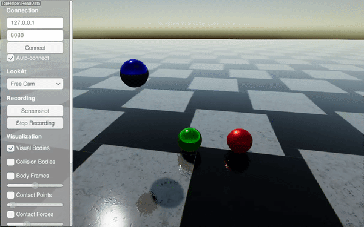

Material System
In RaiSim, material properties are defined per material pair.
RaiSim currently utilizes seven material properties:
Coefficient of friction (\(\mu\ge 0\)): Defines the frictional force applied between two contacting materials.
Coefficient of restitution (\(c_r\ge 0\)): Determines the elasticity of the material pair.
Restitution threshold (\(r_{th}\ge 0\), m/s): Objects will not rebound if the impact velocity falls below this threshold.
Coefficient of static friction (\(\mu_{s}\ge \mu\)): When specified, this defines the frictional force applied during near-zero relative velocity between contact points. By default, it equals the coefficient of friction.
Velocity threshold for static friction (\(v_s \ge 0\), m/s): Required when the coefficient of static friction is defined. If the relative velocity exceeds this value, static friction is disregarded. Otherwise, the effective coefficient of friction is interpolated between the static and dynamic coefficients.
Coefficient of rolling friction (\(\mu_r \ge 0\)): Resists rotation that rolls a finite-radius body over a contact patch. It is disabled (zero) by default.
Coefficient of spinning friction (\(\mu_{spin} \ge 0\)): Resists torsional rotation about the contact normal. It is disabled (zero) by default.
For an impact velocity \(v_i\), the target bounce velocity is \(c_r\max(0, v_i-r_{th})\). The following graphs illustrate the effects of these material properties.
Runnable examples are listed in Examples. The material API below applies to any material name used by objects in the world.
A material name is assigned upon creation. For instance:
auto ball = world.addSphere(1, 1, "steel");
The World instance maintains a MaterialManager that stores all material pair properties.
Undefined material pairs utilize default material properties, which can be configured via raisim::World::setDefaultMaterial.
If default properties are not explicitly set, they default to {\(\mu=0.8\), \(c_r=0\), \(r_{th}=0.01\)}
with \(\mu_s=\mu\) and no rolling or spinning friction.
Material properties for a specific pair can be defined as follows:
world.setMaterialPairProp("steel", "glass", 0.7, 0.1, 0.15);
The first two arguments specify the material names, followed by the coefficient of friction, coefficient of restitution, and restitution threshold. The order of the material names is interchangeable. This overload sets the static friction coefficient equal to the dynamic one, with a static-friction velocity threshold of 1e-3 m/s.
A seven-argument overload adds the static friction coefficient and its velocity threshold. The nine-argument overload below also sets rolling and spinning friction:
world.setMaterialPairProp(
"rubber", "floor",
0.9, // dynamic friction mu
0.0, // restitution
0.0, // restitution threshold
1.1, // static friction mu_static
1e-3, // static-friction velocity threshold
0.05, // rolling friction mu_r
0.02); // spinning friction mu_spin
Rolling and Spinning Friction
Purpose
Coulomb friction acts on the tangential relative velocity of the two contact points. It is enough to oppose sliding, but it does not model all rotational losses at a finite contact patch. A sphere or cylinder can therefore keep rolling for too long, and an object spinning in place about the contact normal can keep rotating even when there is no lateral slip. Rolling and spinning friction add bounded angular friction impulses to handle those two effects.
These coefficients are per material pair, just like ordinary friction. They are zero by default. If both are zero, RaiSim keeps the normal contact solver path and does not run the extra angular-friction path for that material pair.
Coordinate and shape conventions
RaiSim uses a z-up world convention. For primitive cylinders, the cylinder axis is the body’s local z axis. A default cylinder standing on a flat ground plane has its cylinder axis aligned with world z. That configuration is useful for spinning-friction tests, but it is not a rolling cylinder. To test or model cylinder rolling, rotate the cylinder so its local z axis lies in the horizontal world x-y plane.
The contact frame has its local z axis along the contact normal. Angular friction is solved in this contact frame:
contact-frame x and y angular components are rolling components;
contact-frame z angular component is the spinning component.
Model
For a contact with normal impulse \(p_n\), effective rolling radius \(r_e\), rolling coefficient \(\mu_r\), and spinning coefficient \(\mu_{spin}\), RaiSim computes a bounded angular impulse \(\boldsymbol{\tau}\) in the contact frame. The tangential part \(\boldsymbol{\tau}_{xy}\) opposes rolling angular velocity, and the normal part \(\tau_z\) opposes spinning angular velocity:
The contact normal impulse \(p_n\) is the solved normal impulse for the same contact during the current contact iteration. The radius \(r_e\) is estimated from the dynamic object’s contact point to center-of-mass distance. For a sphere on a plane this is the sphere radius. For a cylinder lying on its side it is the cylinder radius at the side contact. For two dynamic bodies, RaiSim averages the two available contact radii.
Only dynamic single-body objects (spheres, boxes, capsules, cylinders, meshes, and compounds) currently take part in angular friction. Articulated-system links, deformable objects, and granular particles contribute nothing, so a contact between, for example, a robot foot and the ground receives no rolling or spinning friction even if the material pair defines it.
The solver forms the relative angular velocity in the contact frame, \(\boldsymbol{\omega}_{rel}\), and an angular apparent inverse inertia:
where \(\boldsymbol{R}_c\) maps contact-frame impulses to world-frame angular impulses, and static bodies and bodies without angular-friction support contribute zero inverse inertia. The unconstrained angular impulse is then
and is projected onto the rolling/spinning friction bounds above. The impulse increment is applied to generalized velocity inside the contact solver iteration. This is intentionally not a post-step damping torque: applying torques after the contact solve can violate the contact constraints that were just solved and can produce penetration or lift-off artifacts.
Solver behavior and performance
Rolling/spinning friction is solver-integrated but opt-in:
Material pairs with \(\mu_r = 0\) and \(\mu_{spin} = 0\) use the standard contact path.
If any active contact has nonzero rolling or spinning friction, RaiSim uses an extended contact-solver path for that step.
The extra work is local to contacts whose material pair requests angular friction. It computes contact-frame angular velocity, angular apparent inertia, and the projected angular impulse.
This keeps existing scenes fast by default while allowing higher-fidelity rolling and spinning decay where the material pair needs it.
Choosing coefficients
Rolling and spinning coefficients are not replacements for Coulomb friction. Use them for rotational losses at a contact patch:
Increase \(\mu_r\) when balls, wheels, barrels, or side-lying cylinders roll for too long despite plausible sliding friction.
Increase \(\mu_{spin}\) when objects spin in place too long about the contact normal.
Keep both zero for contacts where rotational loss is not important or where speed is more important than this detail.
Start with small values such as
0.01to0.05. Large values can make rolling decay very aggressive and can increase solver coupling.
The spinning-friction case can be tested independently by setting Coulomb/static friction to zero and setting only the spinning coefficient. The object should spin down without relying on lateral slip friction.
C++ examples
Sphere rolling on a z-up ground plane. setVelocity takes the linear and
angular velocity in the world frame; the values below roll the ball along +x
without slip (\(v_x = \omega_y r\)):
raisim::World world;
world.setGravity({0.0, 0.0, -9.81});
world.addGround(0.0, "ground");
world.setMaterialPairProp(
"ground", "ball",
1.0, 0.0, 0.0, // dynamic friction, restitution, threshold
1.0, 1e-3, // static friction and transition speed
0.05, 0.0); // rolling friction, spinning friction
auto* ball = world.addSphere(0.5, 1.0, "ball");
ball->setPosition(0.0, 0.0, 0.5);
ball->setVelocity(2.0, 0.0, 0.0, 0.0, 4.0, 0.0);
Cylinder rolling on the same ground plane. The cylinder local z axis is first rotated to world x, so angular velocity about world x rolls it along world y (\(v_y = -\omega_x r\) without slip):
world.setMaterialPairProp(
"ground", "body",
1.0, 0.0, 0.0,
1.0, 1e-3,
0.05, 0.0); // rolling friction only
auto* cylinder = world.addCylinder(0.3, 0.8, 1.0, "body");
cylinder->setOrientation(0.7071067812, 0.0, 0.7071067812, 0.0); // local z -> world x
cylinder->setPosition(0.0, 0.0, 0.3);
cylinder->setVelocity(0.0, 2.4, 0.0, -8.0, 0.0, 0.0);
Spinning friction without Coulomb sliding friction:
world.setMaterialPairProp(
"ground", "body",
0.0, 0.0, 0.0, // no Coulomb/static friction contribution
0.0, 1e-3,
0.0, 0.08); // spinning friction only
auto* cylinder = world.addCylinder(0.3, 0.8, 1.0, "body");
cylinder->setPosition(0.0, 0.0, 0.4); // upright cylinder on z-up ground
cylinder->setVelocity(0.0, 0.0, 0.0, 0.0, 0.0, 12.0);
XML examples
Rolling and spinning friction can also be set on pair_prop entries:
<material>
<default friction="0.8" restitution="0" restitution_threshold="0"/>
<pair_prop name1="ground" name2="ball"
friction="1.0" restitution="0" restitution_threshold="0"
static_friction="1.0" static_friction_velocity_threshold="0.001"
rolling_friction="0.05" spinning_friction="0.02"/>
</material>
Validation
RaiSim includes a regression test for the model. It checks that:
a rolling sphere stops;
side-lying cylinders rolling along world x and world y stop;
a sphere and upright cylinder spinning about world z stop when only spinning friction is enabled;
all objects remain on the z-up ground plane without monotonic sinking or lift-off.
The benchmark rolling_spinning_friction creates many rolling spheres and
side-lying cylinders with high initial angular velocity and can record a video
for visual inspection.
Example - Single Bodies

XML Approach
<?xml version="1.0" ?>
<raisim version="2.0.0">
<timeStep value="0.001"/>
<objects>
<ground name="ground" material="steel"/>
<sphere name="sphere_steel" mass="1" material="steel">
<dim radius="0.5"/>
<state pos="-2 0 5" quat="1 0 0 0" linVel="0 0 0" angVel="0 0 0"/>
</sphere>
<sphere name="sphere_rubber" mass="1" material="rubber">
<dim radius="0.5"/>
<state pos="0 0 5" quat="1 0 0 0" linVel="0 0 0" angVel="0 0 0"/>
</sphere>
<sphere name="sphere_copper" mass="1" material="copper">
<dim radius="0.5"/>
<state pos="2 0 5" quat="1 0 0 0" linVel="0 0 0" angVel="0 0 0"/>
</sphere>
</objects>
<material>
<default friction="0.8" restitution="0" restitution_threshold="0"/>
<pair_prop name1="steel" name2="steel" friction="0.8" restitution="0.95" restitution_threshold="0.001" rolling_friction="0.02" spinning_friction="0.01"/>
<pair_prop name1="steel" name2="rubber" friction="0.8" restitution="0.15" restitution_threshold="0.001"/>
<pair_prop name1="steel" name2="copper" friction="0.8" restitution="0.65" restitution_threshold="0.001"/>
</material>
</raisim>
C++ Approach (Single Bodies)
#include "raisim/RaisimServer.hpp"
#include "raisim/World.hpp"
int main(int argc, char* argv[]) {
/// The activation key is read from $HOME/.raisim/activation.raisim by default.
/// To use another file, call this before creating the first World:
/// raisim::World::setActivationKey("/absolute/path/to/activation.raisim");
/// Create RaiSim world
raisim::World world;
world.setTimeStep(0.001);
/// Create objects
world.addGround(0, "steel");
auto sphere1 = world.addSphere(0.5, 1.0, "steel");
auto sphere2 = world.addSphere(0.5, 1.0, "rubber");
auto sphere3 = world.addSphere(0.5, 1.0, "copper");
sphere1->setPosition(-2,0,5);
sphere2->setPosition(0,0,5);
sphere3->setPosition(2,0,5);
world.setMaterialPairProp("steel", "steel", 0.8, 0.95, 0.001);
world.setMaterialPairProp("steel", "rubber", 0.8, 0.15, 0.001);
world.setMaterialPairProp("steel", "copper", 0.8, 0.65, 0.001);
/// Launch RaiSim server
raisim::RaisimServer server(&world);
server.launchServer();
for (int i = 0; i < 10000000; i++) {
raisim::MSLEEP(1);
server.integrateWorldThreadSafe();
}
server.killServer();
}
Example - Articulated Systems
URDF Approach
Material properties can be specified within the URDF file as follows:
<!-- Foot link -->
<link name="LF_FOOT">
<collision>
<origin xyz="0 0 0.02325"/>
<geometry>
<sphere radius="0.035"/>
</geometry>
<material name="">
<contact name="ice"/>
</material>
</collision>
</link>
C++ Approach (Articulated Systems)
Alternatively, materials can be assigned dynamically:
anymal->getCollisionBody("LF_FOOT/0").setMaterial("ice");
Here, “LF_FOOT/0” refers to the first collision body of the “LF_FOOT” link
(collision bodies are named <link name>/<collision index>).
To retrieve the name of an assigned material:
anymal->getCollisionBody("LF_FOOT/0").getMaterial();
To obtain contact properties for a collision between two materials (here, the
foot and a ground created with world.addGround):
const raisim::MaterialPairProperties& props =
world.getMaterialPairProperties(anymal->getCollisionBody("LF_FOOT/0").getMaterial(),
ground->getCollisionBody()->material);
API
Material Pair Properties
-
struct MaterialPairProperties
Contact properties of a pair of materials.
Public Functions
-
inline MaterialPairProperties(double c_f_, double c_r_, double r_th_)
The static friction coefficient equals c_f_ and its transition speed is 1 m/s.
- Parameters:
c_f_ – [in] friction coefficient
c_r_ – [in] restitution coefficient
r_th_ – [in] restitution threshold velocity (m/s)
-
inline MaterialPairProperties(double c_f_, double c_r_, double r_th_, double c_sf_, double v_sf_)
- Parameters:
c_f_ – [in] dynamic friction coefficient
c_r_ – [in] restitution coefficient
r_th_ – [in] restitution threshold velocity (m/s)
c_sf_ – [in] static friction coefficient
v_sf_ – [in] static friction transition speed (m/s), see setStaticFrictionVelocityThreshold()
-
inline MaterialPairProperties(double c_f_, double c_r_, double r_th_, double c_sf_, double v_sf_, double c_rf_, double c_spf_)
- Parameters:
c_f_ – [in] dynamic friction coefficient
c_r_ – [in] restitution coefficient
r_th_ – [in] restitution threshold velocity (m/s)
c_sf_ – [in] static friction coefficient
v_sf_ – [in] static friction transition speed (m/s)
c_rf_ – [in] rolling friction coefficient
c_spf_ – [in] spinning friction coefficient
-
inline void setStaticFrictionVelocityThreshold(double threshold)
Sets the transition speed and its reciprocal together. A non-positive or non-finite threshold disables the static-friction blend rather than storing 1/0 = inf in the material table, where it would propagate through copies, checkpoints and XML export.
- Parameters:
threshold – [in] transition speed (m/s)
Public Members
-
double c_f
Coefficient of friction.
-
double c_r
Coefficient of restitution.
-
double r_th
Restitution threshold velocity (m/s).
-
double c_static_f
Static friction coefficient.
-
double v_static_speed
Static friction transition speed (m/s). Set it with setStaticFrictionVelocityThreshold().
-
double v_static_speed_inv
Inverse of static friction transition speed. Zero when there is no transition band.
-
double c_rolling_f
Rolling friction coefficient. Zero keeps the standard contact solver path.
-
double c_spinning_f
Spinning friction coefficient. Zero keeps the standard contact solver path.
-
inline MaterialPairProperties(double c_f_, double c_r_, double r_th_)
Material Manager
-
class MaterialManager
Table of contact properties per material pair. Materials are identified by name; a pair without its own properties uses the default material properties. The World owns one (see World::setMaterialPairProp() and World::updateMaterialProp()).
Public Functions
-
MaterialManager()
Creates a table that contains only the “default” material.
-
explicit MaterialManager(const std::string &xmlFile)
upload material data from file
- Parameters:
xmlFile – [in] RaiSim XML file whose <raisim> root contains a <material> element with an optional <default> child and <pair_prop> children
-
void setMaterialPairProp(const std::string &mat1, const std::string &mat2, double friction, double restitution, double resThreshold, double staticFriction, double staticFrictionVelocityThreshold)
Set the properties of a material pair (rolling and spinning friction are set to 0). Unknown material names are registered. The order of mat1 and mat2 does not matter.
- Parameters:
mat1 – [in] first material name
mat2 – [in] second material name
friction – [in] dynamic friction coefficient
restitution – [in] restitution coefficient
resThreshold – [in] restitution threshold velocity (m/s)
staticFriction – [in] static friction coefficient
staticFrictionVelocityThreshold – [in] static friction transition speed (m/s)
-
void setMaterialPairProp(const std::string &mat1, const std::string &mat2, double friction, double restitution, double resThreshold, double staticFriction, double staticFrictionVelocityThreshold, double rollingFriction, double spinningFriction)
Set the properties of a material pair, including rolling and spinning friction.
- Parameters:
mat1 – [in] first material name
mat2 – [in] second material name
friction – [in] dynamic friction coefficient
restitution – [in] restitution coefficient
resThreshold – [in] restitution threshold velocity (m/s)
staticFriction – [in] static friction coefficient
staticFrictionVelocityThreshold – [in] static friction transition speed (m/s)
rollingFriction – [in] rolling friction coefficient
spinningFriction – [in] spinning friction coefficient
-
inline void setMaterialPairProp(const std::string &mat1, const std::string &mat2, double friction, double restitution, double resThreshold)
Set the properties of a material pair. The static friction coefficient equals friction and its transition speed is 1e-3 m/s.
- Parameters:
mat1 – [in] first material name
mat2 – [in] second material name
friction – [in] friction coefficient
restitution – [in] restitution coefficient
resThreshold – [in] restitution threshold velocity (m/s)
-
const MaterialPairProperties &getMaterialPairProp(const std::string &mat1, const std::string &mat2) const
- Parameters:
mat1 – [in] first material name; unknown names are treated as “default”
mat2 – [in] second material name; unknown names are treated as “default”
- Returns:
properties of the pair (order-independent), or the default properties if the pair has none
-
const MaterialPairProperties &getMaterialPairProp(unsigned int mat1, unsigned int mat2) const
- Parameters:
mat1 – [in] first material id
mat2 – [in] second material id
- Returns:
properties of the pair, or the default properties if the pair has none or an id is out of range
-
unsigned int getMaterialIdOrDefault(const std::string &matName) const
- Parameters:
matName – [in] material name
- Returns:
the id of the material, or the “default” material id if the name is unknown
-
inline unsigned int getDefaultMaterialId() const
- Returns:
the id of the “default” material
-
void setDefaultMaterialProperties(double friction, double restitution, double resThreshold, double staticFriction, double staticFrictionVelocityThreshold, double rollingFriction = 0.0, double spinningFriction = 0.0)
Set the properties used by pairs without their own properties.
- Parameters:
friction – [in] dynamic friction coefficient
restitution – [in] restitution coefficient
resThreshold – [in] restitution threshold velocity (m/s)
staticFriction – [in] static friction coefficient
staticFrictionVelocityThreshold – [in] static friction transition speed (m/s)
rollingFriction – [in] rolling friction coefficient
spinningFriction – [in] spinning friction coefficient
Public Members
-
std::unordered_map<unsigned int, MaterialPairProperties> materials_
Pair properties set by setMaterialPairProp(), keyed by larger id * 10000 + smaller id.
-
std::unordered_map<std::string, unsigned int> materialKeys_
Map from material name to material id.
-
MaterialPairProperties defaultMaterial_
Default material properties (used when no override exists).
-
unsigned int nextMaterialIdx_
Next material id to allocate.
-
MaterialManager()